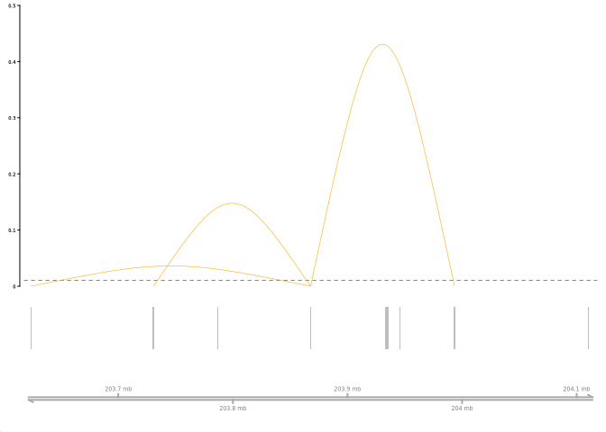
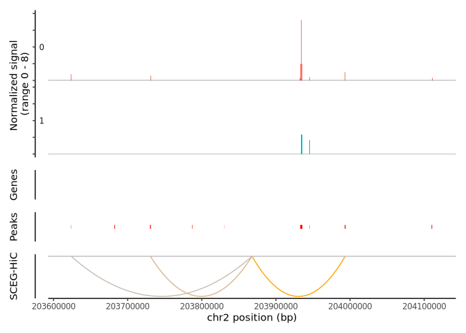

Overview
SCEG-HiC predicts interactions between genes and enhancers using multi-ome (paired scRNA-seq and scATAC-seq or only scATAC-seq) sequencing data and three-dimensional omics data (the bulk average Hi-C). The approach uses weighted graphical lasso (wglasso) model, taking the average Hi-C data as priori knowledge, to predict cell specific interactions between genes and enhancers based on the correlation between genes and enhancers.
Installation
Required software
SCEG-HiC runs in the R statistical computing environment. You will need R version 4.1.0 or higher, Bioconductor version 3.14 or higher, and Seurat 4.0 or higher to have access to the latest features.
To install Bioconductor, open R and run:
if (!requireNamespace("BiocManager", quietly = TRUE)) {
install.packages("BiocManager")
}Next, install a few Bioconductor dependencies that aren’t automatically installed:
BiocManager::install(c('BiocGenerics', 'DelayedArray', 'DelayedMatrixStats',
'limma', 'lme4', 'S4Vectors', 'SingleCellExperiment',
'SummarizedExperiment', 'batchelor', 'HDF5Array',
'terra', 'ggrastr','Gviz', 'rtracklayer','GenomeInfoDb','GenomicRanges'))Installation of other dependencies
- Install Signac pacakge :
devtools::install_github("timoast/signac", ref = "develop"). Please check here if you encounter any issue. - Install Cicero package:
devtools::install_github("cole-trapnell-lab/cicero-release", ref = "monocle3"). Please check here if you encounter any issue.
Now, you can install the development version of SCEG-HiC from GitHub with:
# install.packages("devtools")
devtools::install_github("wuwei77lx/SCEGHiC")If you wish to install CRAN of SCEG-HiC, execute:
# Install released version from CRAN
install.packages("SCEGHiC")The bulk average Hi-C
The celltypes used by human for averaging are: GM12878, NHEK, HMEC, RPE1, THP1, IMR90, HUVEC, HCT116, K562, KBM7.
The celltypes used by mouse for averaging are: mESC1, mESC2, CH12LX, CH12F3, fiber, epithelium, B.
Generate the bulk average Hi-C using the Activity by Contact (ABC) model’s makeAverageHiC.py.
Average Hi-C data can be downloaded from:
- The human avg HiC file here: https://www.encodeproject.org/files/ENCFF134PUN/@@download/ENCFF134PUN.bed.gz
Extract the human bulk average Hi-C using the Activity by Contact (ABC) model’s extract_avg_hic.py.
python workflow/scripts/extract_avg_hic.py --avg_hic_bed_file ../ENCFF134PUN.bed.gz --output_dir ../- The mouse avg HiC file here: 10.5281/zenodo.14849886
Quickstart
This is a basic example which shows you how to solve a common problem:
Aggregated with paired scRNA-seq and scATAC-seq data
library(SCEGHiC)
library(Signac)
## basic example code
data(multiomic_small)
# Preprocess data
SCEGdata <- process_data(multiomic_small, k_neigh = 5, max_overlap = 0.5)
#> Generating aggregated data
#> Aggregating cluster 0
#> Sample cells randomly.
#> have 11 samples
#> Aggregating cluster 1
#> Sample cells randomly.
#> have 11 samples
gene <- c("TRABD2A", "GNLY", "MFSD6", "CTLA4", "LCLAT1", "NCK2", "GALM", "TMSB10", "ID2", "CXCR4")
fpath <- system.file("extdata", package = "SCEGHiC")
# Calculate weight
weight <- calculateHiCWeights(SCEGdata, species = "Homo sapiens", genome = "hg38", focus_gene = gene, averHicPath = fpath)
#> Successfully obtained 10 TSS loci of genes from chromosome 2.
#> Calculate weight of TRABD2A
#> Calculate weight of GNLY
#> Calculate weight of MFSD6
#> Calculate weight of CXCR4
#> Calculate weight of CTLA4
#> Calculate weight of LCLAT1
#> Calculate weight of NCK2
#> Calculate weight of ID2
#> Calculate weight of GALM
#> Calculate weight of TMSB10
# Run model
results_SCEGHiC <- Run_SCEG_HiC(SCEGdata, weight, focus_gene = gene)
#> The predicted genes are 10 in total.
#> Run model of TRABD2A
#> Run model of GNLY
#> Run model of MFSD6
#> Run model of CXCR4
#> Run model of CTLA4
#> Run model of LCLAT1
#> Run model of NCK2
#> Run model of ID2
#> Run model of GALM
#> Run model of TMSB10
# Visualize the links
connections_Plot(results_SCEGHiC, species = "Homo sapiens", genome = "hg38", focus_gene = "CTLA4", cutoff = 0.01, gene_anno = NULL)
# Coverage plot and visualize the links of CTLA4
fpath <- system.file("extdata", "multiomic_small_atac_fragments.tsv.gz", package = "SCEGHiC")
frags <- CreateFragmentObject(path = fpath, cells = colnames(multiomic_small))
#> Computing hash
Fragments(multiomic_small) <- frags
coverPlot(multiomic_small, focus_gene = "CTLA4", species = "Homo sapiens", genome = "hg38", assay = "peaks", SCEG_HiC_Result = results_SCEGHiC, SCEG_HiC_cutoff = 0.01)
#> Warning in .merge_two_Seqinfo_objects(x, y): The 2 combined objects have no sequence levels in common. (Use
#> suppressWarnings() to suppress this warning.)
Session Info
sessionInfo()
#> R version 4.4.2 (2024-10-31)
#> Platform: x86_64-conda-linux-gnu
#> Running under: CentOS Linux 7 (Core)
#>
#> Matrix products: default
#> BLAS/LAPACK: /home/liangxuan/conda/envs/test/lib/libopenblasp-r0.3.28.so; LAPACK version 3.12.0
#>
#> locale:
#> [1] LC_CTYPE=en_US.UTF-8 LC_NUMERIC=C
#> [3] LC_TIME=en_US.UTF-8 LC_COLLATE=en_US.UTF-8
#> [5] LC_MONETARY=en_US.UTF-8 LC_MESSAGES=en_US.UTF-8
#> [7] LC_PAPER=en_US.UTF-8 LC_NAME=C
#> [9] LC_ADDRESS=C LC_TELEPHONE=C
#> [11] LC_MEASUREMENT=en_US.UTF-8 LC_IDENTIFICATION=C
#>
#> time zone: Asia/Shanghai
#> tzcode source: system (glibc)
#>
#> attached base packages:
#> [1] stats4 stats graphics grDevices utils datasets methods
#> [8] base
#>
#> other attached packages:
#> [1] ggplot2_3.5.1 BSgenome.Hsapiens.UCSC.hg38_1.4.5
#> [3] BSgenome_1.74.0 rtracklayer_1.66.0
#> [5] BiocIO_1.16.0 Biostrings_2.74.1
#> [7] XVector_0.46.0 EnsDb.Hsapiens.v86_2.99.0
#> [9] ensembldb_2.30.0 AnnotationFilter_1.30.0
#> [11] GenomicFeatures_1.58.0 AnnotationDbi_1.68.0
#> [13] Biobase_2.66.0 GenomicRanges_1.58.0
#> [15] GenomeInfoDb_1.42.1 IRanges_2.40.1
#> [17] S4Vectors_0.44.0 BiocGenerics_0.52.0
#> [19] Seurat_5.2.0 SeuratObject_5.0.2
#> [21] sp_2.1-4 Signac_1.14.9001
#> [23] SCEGHiC_0.0.0.9000
#>
#> loaded via a namespace (and not attached):
#> [1] R.methodsS3_1.8.2 dichromat_2.0-0.1
#> [3] progress_1.2.3 urlchecker_1.0.1
#> [5] nnet_7.3-20 goftest_1.2-3
#> [7] vctrs_0.6.5 spatstat.random_3.3-2
#> [9] digest_0.6.37 png_0.1-8
#> [11] ggrepel_0.9.6 styler_1.10.3
#> [13] deldir_2.0-4 parallelly_1.41.0
#> [15] MASS_7.3-64 reshape2_1.4.4
#> [17] httpuv_1.6.15 withr_3.0.2
#> [19] xfun_0.50 ellipsis_0.3.2
#> [21] survival_3.8-3 memoise_2.0.1
#> [23] commonmark_1.9.2 rcmdcheck_1.4.0
#> [25] profvis_0.4.0 zoo_1.8-12
#> [27] pbapply_1.7-2 R.oo_1.27.0
#> [29] Formula_1.2-5 prettyunits_1.2.0
#> [31] KEGGREST_1.46.0 promises_1.3.2
#> [33] httr_1.4.7 restfulr_0.0.15
#> [35] globals_0.16.3 fitdistrplus_1.2-2
#> [37] ps_1.8.1 rstudioapi_0.17.1
#> [39] UCSC.utils_1.2.0 miniUI_0.1.1.1
#> [41] generics_0.1.3 base64enc_0.1-3
#> [43] processx_3.8.5 curl_6.0.1
#> [45] zlibbioc_1.52.0 polyclip_1.10-7
#> [47] GenomeInfoDbData_1.2.13 SparseArray_1.6.0
#> [49] xopen_1.0.1 xtable_1.8-4
#> [51] stringr_1.5.1 desc_1.4.3
#> [53] evaluate_1.0.3 S4Arrays_1.6.0
#> [55] BiocFileCache_2.14.0 hms_1.1.3
#> [57] irlba_2.3.5.1 colorspace_2.1-1
#> [59] filelock_1.0.3 ROCR_1.0-11
#> [61] reticulate_1.40.0 spatstat.data_3.1-4
#> [63] magrittr_2.0.3 lmtest_0.9-40
#> [65] later_1.4.1 lattice_0.22-6
#> [67] spatstat.geom_3.3-4 future.apply_1.11.3
#> [69] scattermore_1.2 XML_3.99-0.17
#> [71] cowplot_1.1.3 matrixStats_1.5.0
#> [73] RcppAnnoy_0.0.22 Hmisc_5.2-2
#> [75] pillar_1.10.1 nlme_3.1-166
#> [77] cicero_1.3.9 compiler_4.4.2
#> [79] RSpectra_0.16-2 stringi_1.8.4
#> [81] tensor_1.5 minqa_1.2.8
#> [83] SummarizedExperiment_1.36.0 devtools_2.4.5
#> [85] GenomicAlignments_1.42.0 plyr_1.8.9
#> [87] crayon_1.5.3 abind_1.4-8
#> [89] bit_4.5.0.1 dplyr_1.1.4
#> [91] fastmatch_1.1-6 NCmisc_1.2.0
#> [93] codetools_0.2-20 monocle3_1.3.7
#> [95] bslib_0.8.0 slam_0.1-55
#> [97] biovizBase_1.54.0 plotly_4.10.4
#> [99] mime_0.12 splines_4.4.2
#> [101] Rcpp_1.0.14 fastDummies_1.7.4
#> [103] dbplyr_2.5.0 interp_1.1-6
#> [105] knitr_1.49 blob_1.2.4
#> [107] lme4_1.1-36 fs_1.6.5
#> [109] listenv_0.9.1 checkmate_2.3.2
#> [111] Rdpack_2.6.2 pkgbuild_1.4.5
#> [113] Gviz_1.50.0 tibble_3.2.1
#> [115] Matrix_1.6-5 callr_3.7.6
#> [117] tweenr_2.0.3 pkgconfig_2.0.3
#> [119] tools_4.4.2 cachem_1.1.0
#> [121] R.cache_0.16.0 rbibutils_2.3
#> [123] RSQLite_2.3.9 viridisLite_0.4.2
#> [125] DBI_1.2.3 fastmap_1.2.0
#> [127] rmarkdown_2.29 scales_1.3.0
#> [129] grid_4.4.2 usethis_3.1.0
#> [131] ica_1.0-3 Rsamtools_2.22.0
#> [133] sass_0.4.9 patchwork_1.3.0
#> [135] FNN_1.1.4.1 dotCall64_1.2
#> [137] VariantAnnotation_1.52.0 RANN_2.6.2
#> [139] rpart_4.1.24 farver_2.1.2
#> [141] reformulas_0.4.0 yaml_2.3.10
#> [143] VGAM_1.1-12 roxygen2_7.3.2
#> [145] latticeExtra_0.6-30 MatrixGenerics_1.18.1
#> [147] foreign_0.8-88 cli_3.6.3
#> [149] purrr_1.0.2 lifecycle_1.0.4
#> [151] uwot_0.2.2 sessioninfo_1.2.2
#> [153] backports_1.5.0 BiocParallel_1.40.0
#> [155] gtable_0.3.6 rjson_0.2.23
#> [157] ggridges_0.5.6 progressr_0.15.1
#> [159] parallel_4.4.2 testthat_3.2.3
#> [161] jsonlite_1.8.9 RcppHNSW_0.6.0
#> [163] bitops_1.0-9 bit64_4.5.2
#> [165] assertthat_0.2.1 brio_1.1.5
#> [167] Rtsne_0.17 glasso_1.11
#> [169] spatstat.utils_3.1-2 jquerylib_0.1.4
#> [171] spatstat.univar_3.1-1 R.utils_2.12.3
#> [173] lazyeval_0.2.2 shiny_1.10.0
#> [175] htmltools_0.5.8.1 sctransform_0.4.1
#> [177] rappdirs_0.3.3 glue_1.8.0
#> [179] spam_2.11-0 httr2_1.0.7
#> [181] RCurl_1.98-1.16 rprojroot_2.0.4
#> [183] jpeg_0.1-10 gridExtra_2.3
#> [185] boot_1.3-31 igraph_2.0.3
#> [187] R6_2.5.1 tidyr_1.3.1
#> [189] SingleCellExperiment_1.28.1 RcppRoll_0.3.1
#> [191] labeling_0.4.3 cluster_2.1.8
#> [193] pkgload_1.4.0 nloptr_2.1.1
#> [195] DelayedArray_0.32.0 tidyselect_1.2.1
#> [197] ProtGenerics_1.38.0 htmlTable_2.4.3
#> [199] ggforce_0.4.2 xml2_1.3.6
#> [201] future_1.34.0 vdiffr_1.0.8
#> [203] munsell_0.5.1 KernSmooth_2.23-26
#> [205] data.table_1.16.4 htmlwidgets_1.6.4
#> [207] RColorBrewer_1.1-3 biomaRt_2.62.0
#> [209] rlang_1.1.4 spatstat.sparse_3.1-0
#> [211] spatstat.explore_3.3-4 remotes_2.5.0
#> [213] reader_1.0.6See documentation website for more information!
Example
In SCEG-HiC, you can choose to aggregate data or use single-cell type data for analysis.
aggregate data: average data of similar cells,which are used k-nearest neighbor method.
single-cell type data: normalize a single-cell type data.
For more information about how this package has been used with real data, please check the following links:
Help
If you have any problems, comments or suggestions, please contact us at XuanLiang (liangxuan2022@sinh.ac.cn).